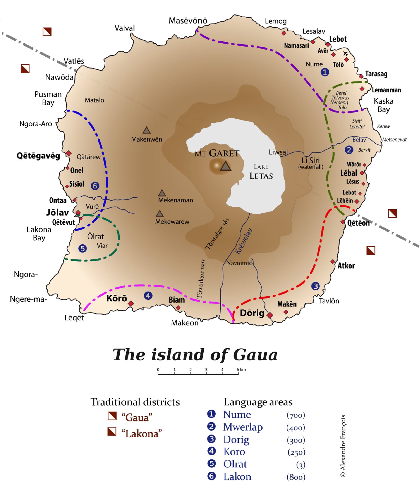

Named after the American anthropologist Franz Boas, the Boasian Trilogy holds that a comprehensive language documentation should comprise three main components: a grammar, a dictionary, and a corpus of texts. Rather than producing three separate outputs, this project reconceives the trilogy as an interactive, persistently interconnected resource — one in which every grammatical claim is traceable to its textual evidence, every lexical item is linked to its morphosyntactic properties, and every archived text is navigable through the grammatical and lexical apparatus that describes it.
The five languages documented here — Nume, Dorig, Koro, Olrat, and Lakon — are spoken on Gaua Island (Banks Islands, Vanuatu), distributed from east to west.
A systematic comparative description of grammatical structures across all five Gaua languages. Every claim is illustrated with interlinear glossed examples; every morpheme links to the dictionary.
Open Grammar →A curated index of natural language texts — myths, procedural texts, narratives, and ritual speech — each linking directly to its archived item in the LACITO Pangloss Collection.
Open Texts →A comparative lexicon giving each form across all five languages, with part of speech, semantic gloss, usage notes, and bidirectional links to the glossed grammatical examples.
Open Dictionary →Gaua (also known as Santa Maria) is a volcanic island in the Banks Islands group of northern Vanuatu, in the south-western Pacific. It rises to 797 m at Mt Garet, whose crater contains Lake Letas, the largest lake in Vanuatu. The island's population of roughly 2,500 people is distributed across coastal villages speaking six distinct languages. Five of them — Nume, Dorig, Koro, Olrat, and Lakon — are documented in this Digital Boasian Trilogy. A sixth language, Mwerlap, is spoken in the south-east of the island and is not included here.
The five DBT languages form a genealogically and geographically coherent dialect chain, distributed from east (Nume, ~700 speakers) to west (Lakon, ~800 speakers), with Olrat occupying a small enclave near Jōlav with only ~3 remaining fluent speakers — making it one of the most critically endangered languages of the Pacific.
Map © Alexandre François
